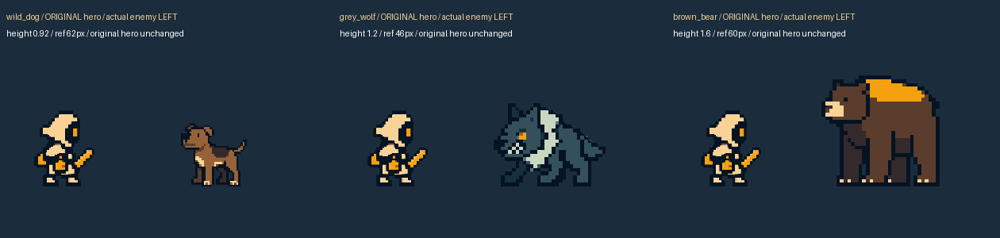

성 밖 몬스터 · v8.5
원본 주인공의 굵은 윤곽선과 단순한 명암을 기준으로 다시 제작했습니다. 들개는 경쾌한 물기, 늑대는 짧은 도약, 곰은 묵직한 내려치기로 구분합니다.
대기는 발을 고정한 작은 호흡입니다. 피격은 기본 이미지가 잠깐 하얗게 변한 뒤 돌아옵니다. 기절은 힘이 빠진 자세를 유지합니다. 사망 모션은 없습니다.
원본 주인공 이미지는 수정하지 않았습니다. 이 페이지의 모든 모션은 PixelLab 원본 프레임이며, 코드로 만든 관절 이동·회전·변형은 사용하지 않았습니다.
실게임 크기 · 전체 프레임 검수
화면 높이 540px / 카메라 월드 높이 6.2 기준. 왼쪽은 원본 주인공, 오른쪽은 실제 크기와 방향의 몬스터입니다. 공격 위치는 별도 게임 런타임이 접촉점에 맞추므로, 아래 플레이어는 모션 크기 비교를 위한 고정 배치입니다.

늑대·곰 Idle은 두 차례 생성 후 발이 고정된 원본 프레임만 골라 1.6초 왕복 루프로 구성했습니다. 발 들림·몸통 변형이 있는 프레임은 사용하지 않았습니다. 원본과 제외 사유는 jobs.json 및 review-decisions.json에 남겨 두었습니다.
입력·생성 이력: jobs.json · 검수 결과 · 통합 데이터